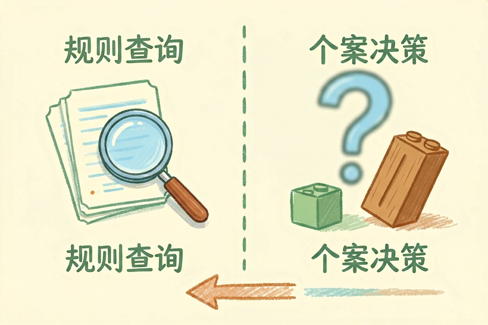
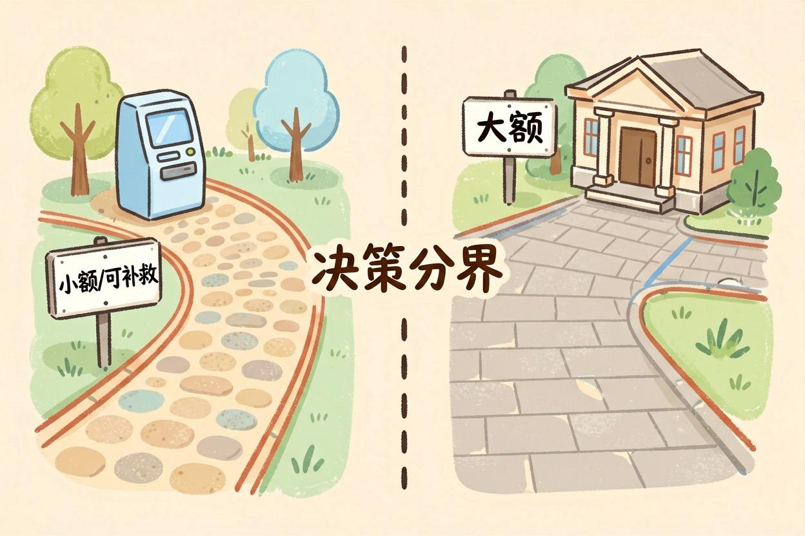
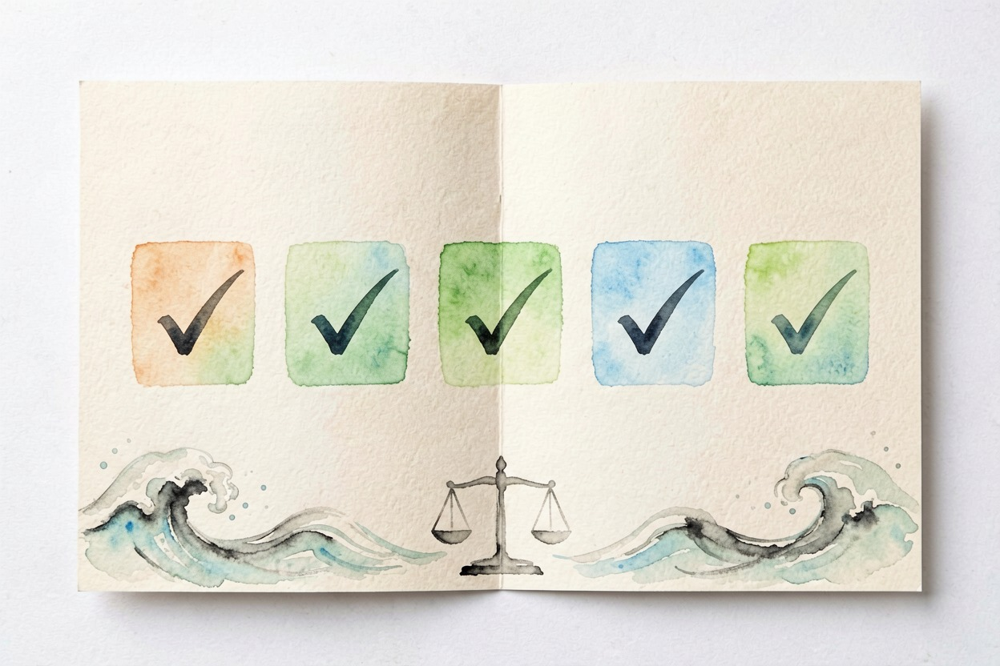

AI 法律咨询靠谱吗？能问和不能问的问题 — Learntide
把它当查资料的助手很省事，把它当拍板的人，代价可能比咨询费高得多。
ai法律咨询靠谱吗：先分清查询和决策

ai法律咨询靠谱吗？当查询和整理工具，它相当好用。当决策依据，它不够格。
这两件事经常被混在一起。你问「租房押金不退怎么办」，它能给出一套清晰的处理思路，这部分基本可信。你问「我这个案子能赢吗」，它给的任何百分比都是编的。
分界线在这里：解释既有规则它行，判断具体个案它不行。
它擅长的几类活
第一类是概念扫盲。什么是表见代理，无固定期限合同怎么算，诉讼时效从哪天起算。这些标准概念它讲得比多数普法文章清楚，听不懂还能让它换个说法再讲。收到看不懂的判决书或者律师函，粘进去让它翻成大白话，同样管用。
第二类是合同初筛。把条款粘进去，让它标出对你不利的地方。违约金比例、单方解除权、管辖地、自动续约，这些常见陷阱它抓得挺准。但它只负责提示，改不改、怎么改，还得你自己拿主意。
第三类是起草初稿。借条、离职申请、催款函、投诉信，它出的版本比空白文档强太多，改改就能用。
第四类可能最被低估：帮你把问题问清楚。很多人见律师时讲不明白经过。先跟 AI 过一遍，梳理出时间线和关键证据，再去咨询，效率完全不一样。
提问模板 —— 照这个结构问，回答质量差别很大
角色：你是熟悉中国大陆法律的法务助理
背景：2025 年 3 月我与 A 公司签劳动合同，约定试用期 6 个月
事实：8 月公司以「不符合录用条件」解除，未说明具体标准
诉求：想知道这个解除是否合规，我可以主张什么
要求：
1. 逐条列出法律依据，注明法律名称和条款号
2. 明确指出哪些结论存在争议或地区差异
3. 列出我还需要补充哪些证据材料
4. 不确定就直说不确定，不要编造条文最后那句每次都带上，能明显减少胡编。
它不靠谱的地方在哪
最大的问题是编造。法条号、司法解释、判例名称，模型都可能一本正经地造出来，格式挑不出毛病，一查根本不存在。它引用的条文，你都得自己核一遍。
第二是时效。法律修订频繁，模型的知识有截止时间，可能还停在旧版本。已经废止的旧法，它有时照样拿出来引用。
第三是地域差异。同一个问题，各地法院口径不同，地方性法规也不一样。它给的往往是最通用的说法，落到你所在的城市未必适用。
第四是隐私。真实案情里有身份证号、合同金额、公司名称。这些粘进对话框，就脱离了你的掌控。发之前先替换掉。
第五是没有责任。律师给错意见要担责，模型不会。这个差别在重要事项上是决定性的。
别把它当律师用

给个简单的分界标准。
金额不大、错了也能补救的事，AI 给的思路可以直接用。租房纠纷、消费维权、写封催款函，问题不大。
金额较大、有时间限制、或者一签字就难反悔的，一律找执业律师。劳动仲裁、股权协议、房产交易、任何诉讼。几百块咨询费，比事后花几万补救划算。
还有一点要提醒：别把 AI 的回答直接当成法律文书提交。它的措辞常常似是而非，在正式场合会露怯。
说到底，ai法律咨询靠谱吗，取决于你把它摆在哪个位置 —— 当助手很好用，当决策者会出事。

本文信息核对于 2026-08-08。AI 产品的价格、免费额度与功能变动频繁，实际以各工具官网当前说明为准。